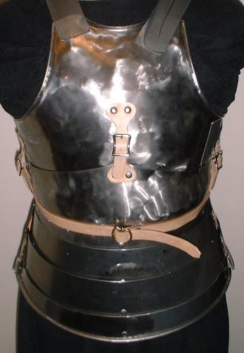
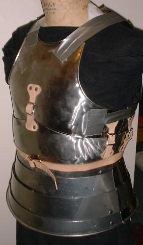

Body Armour (c. Early 15th Century Italian Style)
(Based on Churburg suit18)




Body Armour (c. Early 15th Century Italian Style)
(Based on Churburg suit 18)
Mostly 0.035" 1050 carbon steel (I used some 0.050" when I ran out of 0.035")
Work in Progress (Shown)
Copyright 2000 Craig W. Nadler All rights reserved